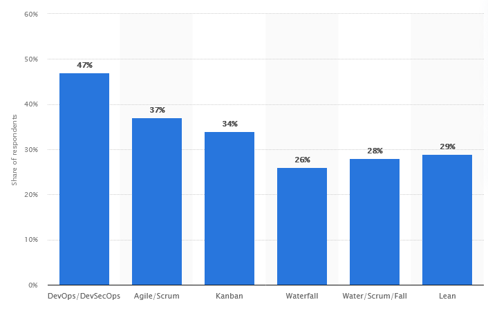

Most software development processes are a mix of established practices.
The SDLC is a framework for organizing these practices.
Which proccess is best depends on the project.
Stats

In agile development, software is developed in short
iterations. Each iteration is a complete development cycle, from planning
to deployment.
These methodologies are also used in other industries, such as
manufacturing.
Works well when:
Requirements are flexible
Close relationship between developers and stakeholders
Able to receive feedback and respond quickly
Teams are small and can be cross-functional
Examples:
Business software
Data analytics tooling
Web development
Mobile apps
Advantages:
Application is available early in the process.
Higher client and customer satisfaction.
Build relationships with clients and customers.
Changes are easy and inexpensive.
Disadvantages:
Less documentation.
Less accountability.
Less predictability.
Principles
Agile Manifesto:
Individuals and interactions over processes and tools
Working software over comprehensive documentation
Customer collaboration over contract negotiation
Responding to change over following a plan
Types of Agile
Many principles and practices overlap between these methodologies.
Scrum
Popular in software and manufacturing.
Sprints
Iterations with clear goals, start and end dates
Usually 2-4 weeks
Daily standups
15 minute meeting
Identify blockers
Backlog
List of tasks to be completed
Prioritized by importance
Tasks are assigned to sprints
Kanban
Work is assigned (from backlog) only when there is capacity to complete
it.
Visual workflow
Kanban board (sticky note board)
Swimlanes
Limit work in progress
DevOps / DevSecOps
Focuses on use of automation and collaboration between teams.
DevOps is a combination of development and operations.
DevSecOps is a combination of development, security, and
operations. Brings focus to security throughout the process.
Domain
Activities
Development
Design, develop, test
Operations
Deploy, monitor, scale, maintain
Security
Assess risk, penetration testing, threat modeling
*Testing spans multiple domains.
Works well when:
Very large projects
Multiple teams
Multiple applications
Multiple environments
Examples:
Large enterprise software
Large scale distributed applications
Advantages:
Focus on reliability and security
Fast development, deploymentment, feedback
Avoid lag where there is handoff between teams, e.g.:
Waiting for operations to deploy
Waiting for security to approve
Waiting for new requirements
Disadvantages:
Requires expertise to implement.
Requires buy-in from all teams.
May not be appropriate for small projects / teams / businesses.